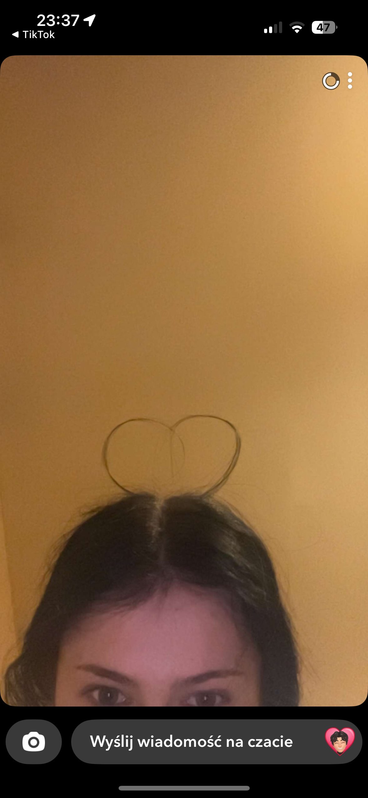

To zdjęcie otrzymałem od Ciebie jeden dzień po tym jak oficjalnie rozpoczęlismy nasz związek, nie potrafiliśmy jeszcze wtedy tak dobrze wyrażać wobec siebie miłości ale były znaki. To był dla mnie niesamowicie przełomowy dzień, ilość emocji która mną targała sprawiała że nie potrafiłem wysiedzieć na krześle, pamiętam jak zestresowany byłem w momencie w którym się Ciebie zapytałem o coś co miało przesądzić o dłuższej części mojego dalszego życia.
← wróć